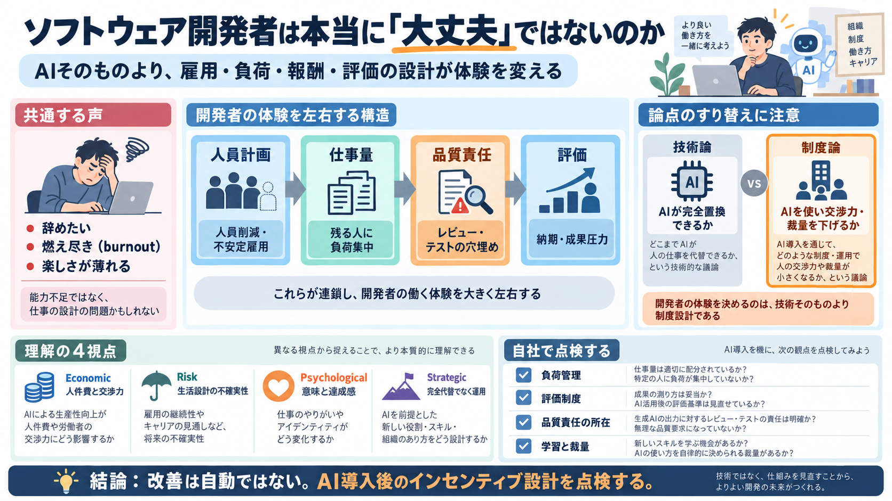

Tech Job Market 2026: Layoffs, AI Salaries, and Hiring Data - Pin
Concrete numbers make the second half of the bifurcation real. Stanford HAI’s 2026 AI Index found that agentic AI listin…

AI導入そのものより、雇用・負荷・報酬・評価の設計が、ソフトウェア開発者の体験をどう変えるのかを問う問題提起です。
辞職（辞める）や燃え尽き（burnout）、AIで面白さが消えた、という実感が広がっているのが前提です。
コメント欄や解雇をきっかけに前倒し退職する動きが目立つ。
一時的景気より、仕事の設計・権限・評価が効いている。
本稿の要点は、「AIが置き換えるか」を主戦場にせず、AIを口実に人員削減や賃金圧力が進む構図を見抜くことです。
コストと交渉力を動かすインセンティブが中心。
AIが完全でなくても「雰囲気」で回せるなら続く。
労働者の苦痛は、技術性能ではなく「人員計画→仕事量→品質責任→評価」の連鎖で発生します。
解雇・不安定雇用が増える。
残る人に成果要求が集約。
ストレス・不安が固定化しやすい。
解雇が続くほど、残った開発者は「品質の穴埋め」を背負い、燃え尽き（burnout）が進むという主張です。
同等以上の成果が求められやすい。
後工程（レビュー／テスト等）で人手が必要になりがち。
AI機能が普及すると、novelty（目新しさ）が薄れ、作業が「古い発想の焼き直し」に感じられる可能性があります。
生成・処理を“誰かにやってもらう”感じが強まる。
達成感や集中（flow／没入）が減りうる。
「AIができるかできないか」ではなく、「AIを使って人間の交渉力と裁量を落とすか」が決定打になり得ます。
LLMが完全に動く必要はないという見立て。
部分的自動化＋人間の消耗で成立しうる。
雇用不確実性が高いと、メンタルヘルスを守るために“準備できる人ほど先に逃げる”動きが起きうると述べます。
解雇の周期性が期待を変える。
“今のうちに”が合理化される。
安く雇える構図が強まりやすい。
筆者の問題提起は、経済・リスク・心理・戦略の4軸で整理すると掴みやすくなります。
コスト構造が企業の取り分を左右。
解雇頻度がメンタルの負荷になる。
委任感が没入と喜びを削ぎうる。
部分的“外注”として成立しうる。
コメントや体感の広がりは手がかりですが、離職率・賃金・燃え尽きの測定などの定量が十分でない点が限界です。
選好バイアス（不満の可視性）が混ざる可能性。
フロー減の因果は職場条件で変わりうる。
AIか否かではなく、(a)負荷管理、(b)品質責任、(c)教育と裁量、(d)評価制度を点検するのが実務的です。
人員削減がロード増に直結していないか。
納期・成果の指標が燃え尽きを増やしていないか。
AI導入後に責任の所在が曖昧になっていないか。
学習機会・意思決定の裁量が減っていないか。
AIバブルが崩れても、部分的自動化と人間の消耗が続く限り、労働条件が自然に良くなるとは限りません。
References（要点）: 本稿の主張は「AIが全面置換するか」ではなく「AI導入が人員計画・報酬・評価・雇用不安定さを通じて体験を変える」という枠組みに依っています。
Concrete numbers make the second half of the bifurcation real. Stanford HAI’s 2026 AI Index found that agentic AI listin…
### The Reality Gap The chart above captures the gap between what CEOs are claiming (or implying through their actions)…
Tech employers announced roughly 52,050 job cuts in the first quarter of 2026, according to Challenger, Gray & Christmas…
Software development postings remained 33% below February 2020 levels through Q3 2025, per Indeed Hiring Lab data. Year…
The global tech industry is facing a major layoff wave in 2026, with more than 125,000 jobs lost so far. May was the pea…